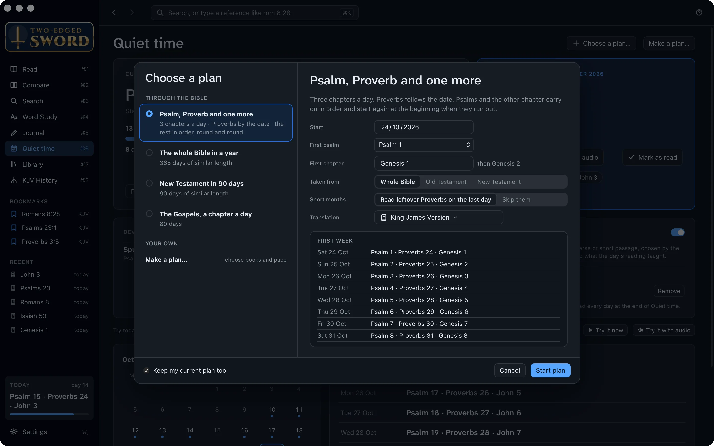
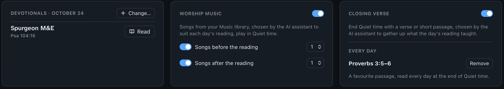
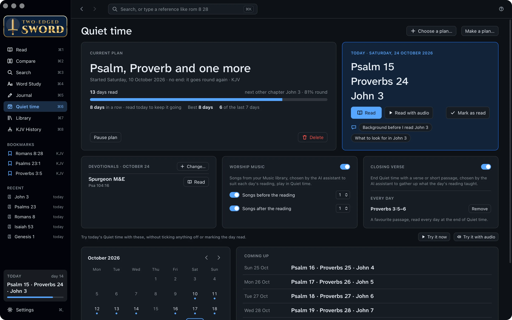
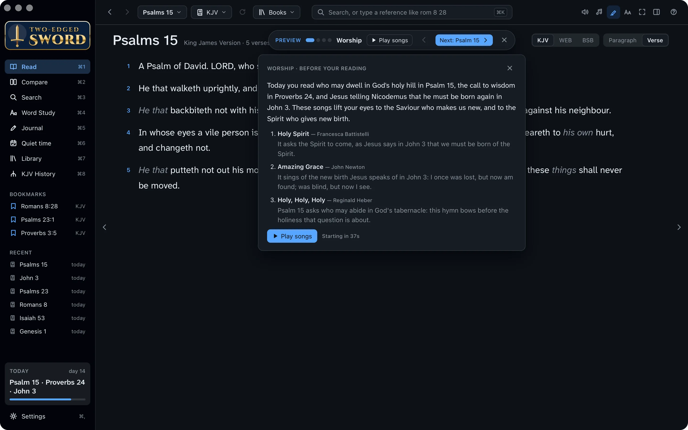
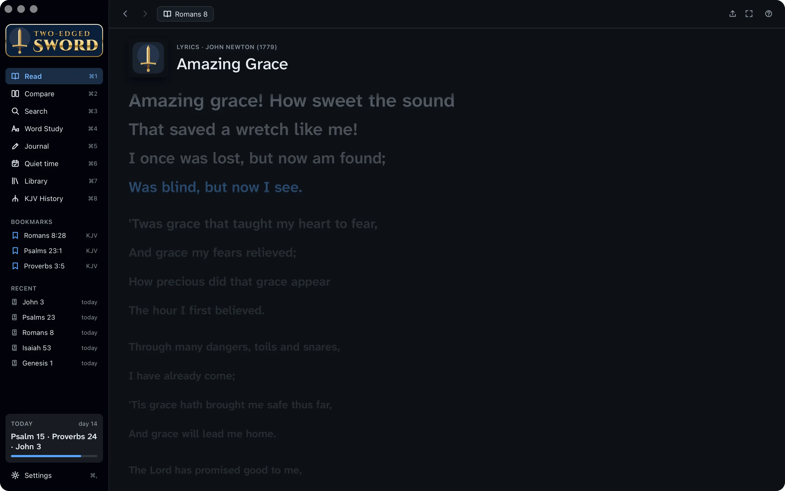
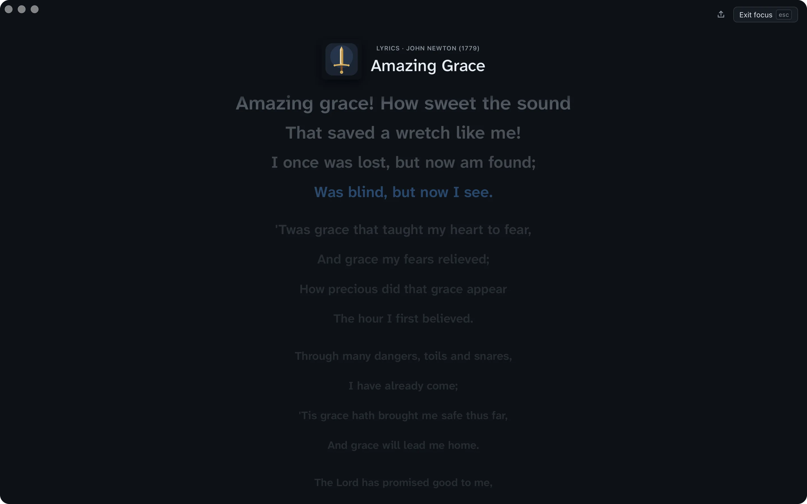
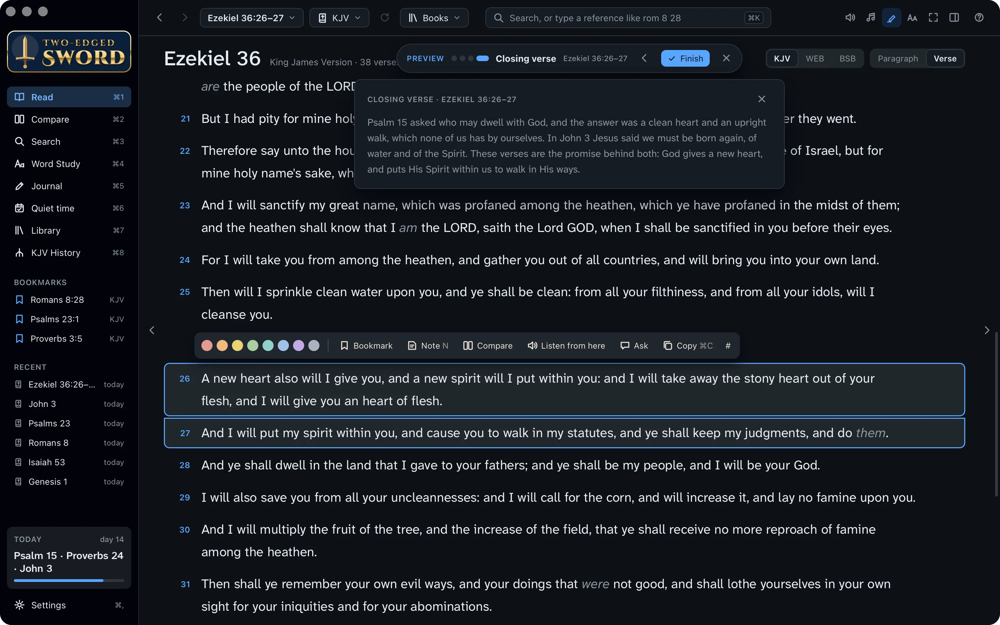
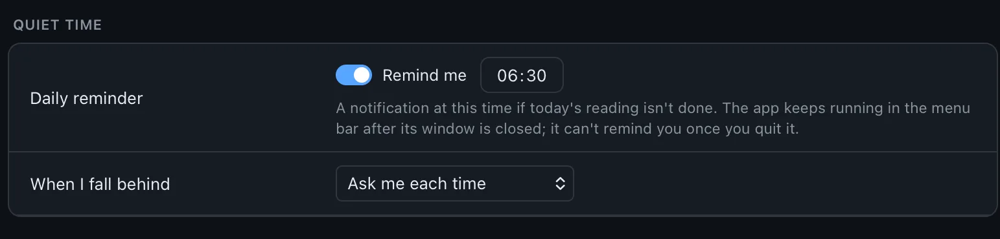
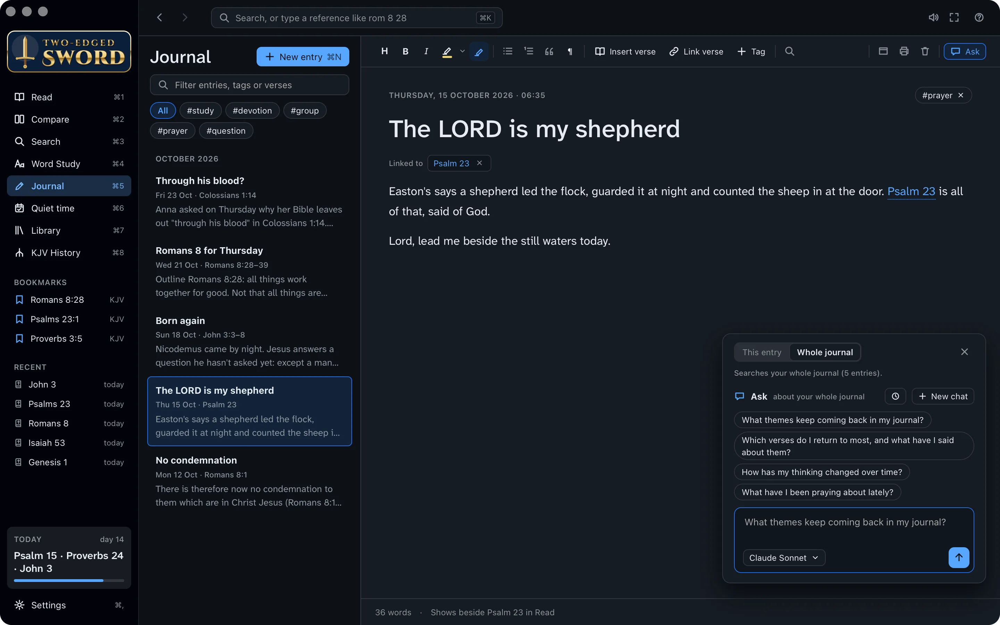

Tutorials › Devotional
A daily
quiet time.
Meet with the Lord each morning: His word, songs of praise, and a few lines of what He is teaching you.
It is of the LORD's mercies that we are not consumed, because his compassions fail not. They are new every morning: great is thy faithfulness.Lamentations 3:22–23
I'm using a
The steps and keys below follow your choice.
The story
Leading the Thursday group at Hillside Church has reminded you how much you need time alone with the Lord yourself. You want to keep a daily quiet time: half an hour each morning, before the day crowds in.
Quiet time is not a task to tick off. It is meeting with Jesus, your Lord and Saviour, who loved you and gave Himself for you. Two-edged Sword sets the table: the day's reading, a devotional, songs to worship Him, and a verse to carry with you. The Holy Spirit, the Comforter, does the teaching (John 14:26).
- A reading plana Psalm, a Proverb and one more
- Worshipsongs chosen for the day's reading
- A closing verseto carry into the day
- A journalof what He is teaching you
Choose a plan.
A plan decides what you'll read each day, so you can come to the Lord without first wondering where to turn.
- Press ⌘6 to open Quiet time.
- Click Choose a plan…. Pick one: Psalm, Proverb and one more, the whole Bible in a year, the New Testament in 90 days, or the Gospels a chapter a day. Make a plan… lets you choose the books and pace yourself.
- The right-hand side shows how it works and its first week. Choose the translation, then click Start plan.

Add a devotional.
A good devotional opens a verse for you, as a friend might over breakfast. The app comes with two classics: Spurgeon's Morning and Evening and Daily Light on the Daily Path.
- On your plan's page, find the Devotionals card and click Change….
- Tick the ones you want: from your library, or Our Daily Bread and Heartlight online. Add a website… adds a devotional site of your own.
- Each is read as part of the day, opened on today's reading.

Read each day.
“Thy word is a lamp unto my feet, and a light unto my path” (Psalm 119:105). Today's card has everything for the morning.
- Click Read. Each of the day's readings opens in turn, with a bar at the top to move on to the next.
- Rather listen? Click Read with audio, and they're read aloud one after another. F7 and F9 go to the part before or after; F8 or ⌘P pauses.
- Each part is ticked off as you finish it. Under the progress bar are your streak, your best run, and how many of the last seven days you read.
- In the calendar, a dot marks a day you read. Click a day to read it.

Before you read. The questions under today's readings, such as Background before I read John 3, ask the AI assistant for a little context first.
Missed a day? His mercies are new every morning, and so is your plan. Settings › Quiet time › When I fall behind chooses whether to catch up or carry on.
Worship first.
“God is a Spirit: and they that worship him must worship him in spirit and in truth” (John 4:24). A song or two before you read quiets the heart and turns it to Him.
- On the Worship music card, turn on Songs before the reading, and Songs after the reading if you like, and choose how many.
- The AI assistant picks songs from your Apple Music libraryfrom the music files in your Music folder to suit the day's readings. A card says why each one was chosen.
- Click Play songs, or let them start by themselves after the countdown.

Songs play in Music. The first time, macOS asks whether the app may control Music. A song isn't chosen again for 14 days.
Songs from your Music folder. The app plays MP3, M4A, FLAC and other files itself. Only songs whose genre is Christian, Gospel or Worship are chosen: set it in a file's Properties › Details if it isn't. A song isn't chosen again for 14 days.
Sing the words.
While a song plays, its words show in the reading column, so you can sing along, or simply pray them.
- When the lyrics are timed, the line being sung is lit in blue and kept in view.
- Faint pictures come and go behind the words: a cross, a dove, a river, hands raised. Each has a verse beneath it.
- Press ⌘. for focus mode: the song across the whole window. Esc leaves it.


Rather not have the pictures? Settings › Listening › While a song plays turns them off.
End with a verse.
The closing verse gathers up what the morning's reading taught, so you leave with one word from the Lord to carry through the day.
- Turn on the Closing verse card on your plan's page. The AI assistant chooses the verse while you read.
- At the end, it opens highlighted, with a card that says how it sums up the day. With audio, it's read aloud after a countdown; Read now skips the wait.
- Under Every day, type a favourite passage, such as Pro 3:5-6, and click Add. It's read at the very end, every day.
- Click Finish to end your quiet time.
A new heart also will I give you, and a new spirit will I put within you … And I will put my spirit within you, and cause you to walk in my statutes.Ezekiel 36:26–27

Try it first. Try it now, under the cards, runs today's quiet time with its songs and closing verse, without marking anything read.
Set a reminder.
Jesus rose a great while before day and went out to pray (Mark 1:35). A gentle reminder helps the habit take root.
- Press ⌘, for Settings, and find Quiet time.
- Turn on Remind me and set the time. If you haven't read by then, a notification lists the day's readings.
- Turning it on sends one straight away, so macOS can ask you to allow notifications.

Write what you learned.
A few lines each morning become a record of the Lord's faithfulness. Months from now, you'll see how He has led you.
Write
- Press ⌘5 for the Journal and ⌘N for a new entry. Or, in Read, select a verse and press N for an entry linked to it.
- Write what struck you, and a prayer. Type a reference such as Psalm 23 and it becomes a link; type # to add a tag, such as #prayer.
Ask about your journal
- Click Ask at the right of the toolbar, and choose Whole journal.
- Ask a question, or click a suggestion.
You ask:
What themes keep coming back in my journal?
The assistant reads:
- No condemnation
- The LORD is my shepherd
- Born again
- Romans 8 for Thursday
- Through his blood?
The answer:
Grace before effort. You keep coming back to what God has done before we do anything: no condemnation in Romans 8:1, the new birth in John 3, and Christ's blood in Colossians 1:14.
The Lord who leads. Psalm 23 and Romans 8:28 both speak of a God who guides and works all things for good. Your prayers ask Him to lead you.

Yours alone. Your journal is kept on your computer, as plain Markdown files in Documents › Two-edged Sword. The assistant reads your entries only when you ask about them.
To God be the glory.
Your quiet time is set: His word each morning, songs to worship Him, a verse to carry with you, and a record of His faithfulness. Along the way, you learned to:
- Choose a reading plan
- Add a devotional
- Read, or listen, each day
- Worship with songs for the reading
- End with a closing verse
- Set a daily reminder
- Start from the menu barnotification area
- Keep a journal, and ask about it